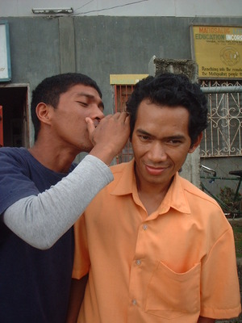

naas 
/naʔas/
vi.
for someone (egnaas-naas, agent, eg><ø-rdpRT-) to whisper something (egna-naasen, theme, eg><en-rdpCVC-)
Mani buwa te egnaas-naas dè sikandan ne eglalag?
I wonder why they are just whispering when they talk?
cf. muteg —mutter
Eng. whisper; speak in whisper
Tag. bumulóng
Ceb. hunghung
Ilo.: arasáas
WBM: na-asna-as
OCM: Non-electronic Transmission of Messages (202)
Online dict status: -
Usage level: M
vi.
for two or more people (egpana-naasey, eg><ø-pA><ey-rdpCVC-) to whisper to each other
Wrd.Gloss: whisper
Egpana-naasey dè sikandan ka eglibak te suled dan pinalanggè te amey ran.
They are whispering to each other talking about their brother whom their father valued most.
Eng. whisper
Online dict status: -
Usage level: R
Updated by: RJH,TME,RJH
Last updated: 28/May/2014
This page last updated: 03-Jan-2020
Copyright © 2009-2014, Matigsalug Language Christian Association, Inc